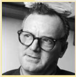

Capítulo 3: a cultura e o contexto da indústria calçadista
Ferramenta dos cientistas sociais: a imaginação sociológica
As pessoas de todas as culturas tem a tendência a olhar para as outras culturas ou para a vida dos outros como olham para sua própria cultura, ou seja, usando uma espécie de óculos que nos faz ver tudo a partir de nossos próprios hábitos, valores e costumes. Assim julgamos o comportamento dos outros sem tentar compreender. Os cientistas sociais antes de julgar precisam entender e para tanto usam a imaginação sociológica.
A imaginação sociológica é uma ferramenta que permite que tenhamos uma nova visão para a sociedade. Uma visão distanciada, saindo da nossa bolha, tirando os óculos de nossa cultura e tentando ver as coisas de uma outra perspectiva, sem preconceitos.
C. Writh Mills, um sociólogo importante, descreve a imaginação sociológica como um tipo de pensamento criativo que nos permite ir além das experiências pessoas e compreender o mundo social de uma maneira nova. Inclusive o nosso. É bem fácil de usar. Faça o seguinte exercício: imagine que você é um antropólogo e está visitando uma tribo indígena pela primeira vez. Imaginou? Tudo o que você vê é novo e prova estranhamento: a comida da tribo, as vestimentas, as pinturas no corpo, os adereços, os rituais, os cantos e assim por diante. Tudo causa em você uma sensação de estranhamento. Mas você não fica comparando esses costumes com os da sua cultura para criticar, apenas com a paixão do investigador. Agora imagine que você ainda está com essa perspectiva do antropólogo, com o mesmo estranhamento, mas observa os costumes de sua cultura. Por exemplo, um domingo no shopping: quais são os costumes daquelas famílias, o que elas querem, o que estão fazendo, etc.? Imagine que você é um antropólogo olhando para essa cultura do shopping pela primeira vez. Como se você fosse um E.T. que acabou de chegar na terra e tenta entender os humanos. Esse olhar é a imaginação sociológica. Pratique. Você vai aprender muito observando a nossa sociedade.

Fonte: http://a3.files.biography.com/image/upload/c_fit,cs_srgb,dpr_1.0,h_1200,q_80,w_1200/MTE4MDAzNDEwMTY4MzUwMjIy.jpg
Charles Wright Mills Sociólogo norte-americano, Charles Wright Mills nasceu em 1916, no Texas, e veio a falecer em 1962, em Nova Iorque. Wright Mills é um dos mais importantes teóricos da teoria do conflito e um grande crítico tanto do ponto de vista consensual como do ponto de vista funcionalista, ambos dominantes na sociedade norte americana do seu tempo.
Fonte: https://www.infopedia.pt/$charles-wright-mills
Todos temos cultura?
É comum escutar as pessoas dizendo “o povo brasileiro não tem cultura” ou “fulano não tem cultura”, “beltrano é um grosso”, “cicrano um ignorante”, “um mal educado” e assim por diante. E você tem cultura? É verdade que o brasileiro é sem cultura? Antes de tudo, será que nessas expressões usamos o termo “cultura” com o mesmo significado?
O pensador francês Felix Guattari (1930-1992) listou três usos do termo “cultura”: 1) cultura-valor é o sentido que aparece na ideia de cultivar o espírito, assim podemos falar de cultura como algo que podemos ter ou adquirir, como quando dizemos que uma pessoa é culta porque leu muitos livros, cursou uma faculdade, fala mais de um idioma; 2) o segundo significado, designado como cultura-alma coletiva, é sinônimo de civilização e expressa a ideia de identidade cultural de um povo – falamos de cultura afro, cultura chinesa, etc; 2) cultura-mercadoria é o sentido que compreende bens, produtos e equipamentos, como os museus, os filmes, exposições artísticas, peças teatrais, shows musicais, ou seja são coisas ou bens que umas pessoas produzem e outras consomem. As três concepções fazem parte do nosso dia-a-dia e todas essas concepções trazem uma carga valorativa que diferencia as pessoas, dividindo indivíduos, grupos e povos: os que tem cultura superior ou inferior, os desta ou daquela cultura, os que consomem bens culturais e os que não podem consumir.
Contextualizando
Cultura calçadista no RS?
Fonte: http://d-log.com/wp-content/uploads/2016/10/exporta%C3%A7%C3%B5es-rio-grande-do-sul-cal%C3%A7ados.jpg e
http://inquietaria.99jobs.com/wp-content/uploads/2015/11/sapato-artesanal7.jpg
Cultura são os padrões aprendidos e compartilhados que tornam as pessoas de distintos povos e nações diferentes nos seus modos de pensar, sentir e agir. A cultura está presente em tudo o que fazemos. Compare as duas fotografias. Temos dois modos de produção representados: na foto da esquerda temos um modo industrial e, na da direita, um modo artesanal.
Das oficinas à indústria
O Estado do Rio Grande do Sul é um mais importante fabricante de calçados do Brasil. Possui empresas espalhadas em diversos municípios e cidades. No ano de 2006, o Estado gaúcho possuía aproximadamente três mil empresas de calçados, que geravam 126 mil empregos diretos. No ano de 2006, os embarques de calçados foram de 82 milhões de pares e geraram uma receita de US$ 1,2 bilhão. Cabe ressaltar, que o Rio Grande do Sul também concentra polos calçadistas, como o do Vale dos Sinos, Vale do Paranhana, Serra Gaúcha e Vale do Taquari .
A história desse hoje importante complexo industrial gaúcho inicia no século XIX, podendo o pioneirismo no curtimento do couro no Rio Grande do Sul ser atribuído ao Barão de Santo Amaro, por ter instalado, em torno de 1820, uma "fábrica de curtume" (Chaves, 1978, p. 119) em sua fazenda localizada no atual município de Viamão.
A disponibilidade da matéria-prima e seu baixo preço tornou acertada a instalação de um curtume, dada a abundância dos couros e facilidade de mercado. A instalação da charqueada, concentrando os abates, possibilitara o incremento na comercialização do couro, que era exportado em grandes quantidades já no início do século XIX.
No decorrer desse século, a atividade coureira passou a se subdividir em profissões especializadas. O conhecer a atividade ultrapassou os limites do auto abastecimento e foi utilizado como meio de vida exclusivo. Mais: nesse processo, o trabalho individual, ainda fundamental para a produção, tende a buscar a integração, abrindo caminho para a especialização e para a divisão do trabalho. Começam a se diferenciar os curtidores, os seleiros, os correeiros e os sapateiros. No final desse século, impõem-se as unidades produtoras maiores, mecanizadas, que reduzem a individualidade artesanal ao exercício de uma função dentro do processo produtivo.
O ingresso do setor coureiro-calçadista na fase industrial, no início do século XX, ensejou a eliminação dos bloqueios existentes para seu acesso ao mercado nacional, um dos quais constituído pela tributação. O poder púbhco estadual atendeu à solicitação desse setor e incluiu no seu programa de reforma tributária, implantado a partir de 1903, a isenção de produtos industrializados do imposto de exportações incidente sobre operações de saída demercadorias para fora dos limites geográficos estaduais.
A conquista do mercado nacional foi lenta, mas na década de 50, quando seacelerava o processo de industrialização e de urbanização no País, a indústria gaúcha solidifica sua posição.
A internacionalização da economia brasileira, a partir de meados da década de 60, propiciou ao setor coureiro-calçadista um novo impulso: em 1969, apenas 1% dos calçados produzidos no Rio Grande do Sul eram exportados;em 1975 e 1983, o mercado externo absorvia 40% da produção local.
Fonte: Texto adaptado de LAGEMANN, Eugênio. O setor Coureiro-Calçadista na História do Rio Grande do Sul. Ensaios FEE, Porto Alegre, 7(2j):69-82, 1986
(Re)construindo conhecimentos
1. O conceito de cultura
Os cientistas sociais, usam a palavra “cultura” num sentido técnico. Eles criaram um conceito de cultura que tem um significado preciso: é tudo o que os seres humanos produzem, tudo o que não é natureza. Nesse sentido, todos os seres humanos têm cultura. No entanto, não devemos pressupor que todos temos a mesma cultura. Muito pelo contrário, como veremos a seguir, devemos usar o termo no plural “culturas”.
O antropólogo Bronislaw Malinovski ensina que a cultura compreende “artefatos, bens, processos técnicos, ideias, hábitos e valores herdados”. Ou seja, tudo o que não é mera natureza ou instinto em nosso modo de vida. A cultura é um processo social e é transmitida, pelo processo de socialização e pela educação, de uma geração para a outra. A cultura é nossa herança social.
No entanto, nós não apenas recebemos a cultura e a internalizamos. Nós somos produtores ativos de cultura. Você recebeu muitos elementos culturais pelos agentes de socialização, como vimos no capítulo 2, mas você não é uma máquina que apenas reproduz o que recebeu: você interpreta, modifica, adapta, inova, rejeita e assim vai modificando a cultura.
Para saber mais:
e https://geekiegames.geekie.com.br/aulas/sociologia/instituicoes-sociais-55257634553cc90025b718dd
2. Cultura material e não-material ou imaterial
A cultura pode ser classificada em duas categorias. Cultura material consiste em todos os artefatos produzidos por uma sociedade e que têm relação direta com o estilo de vida dessa sociedade: ferramentas, máquinas, habitações, roupas, assim por diante. Cultura imaterial, em contrapartida, são todos os aspectos intelectuais de uma sociedade: as normas, as ideias, os valores, as leis, as artes, os costumes, as ciências, a literatura, o folclore, etc.
Dessa distinção podemos derivar uma outra que, provavelmente, você já ouviu falar: patrimônio cultural material ou imaterial.
“Patrimônios imateriais são hábitos enraizados no cotidiano, conhecimentos populares, manifestações artísticas de teor diverso, receitas populares, práticas de religiosidade, manifestações populares no esporte, dentre outros.
Na lista de bens imateriais brasileiros estão a festa do Círio de Nossa Senhora de Nazaré, a Feira de Caruaru, o Frevo, a capoeira, o modo artesanal de fazer Queijo de Minas e as matrizes do Samba no Rio de Janeiro.
O patrimônio material é formado por um conjunto de bens culturais classificados segundo sua natureza: arqueológico, paisagístico e etnográfico; histórico; belas artes; e das artes aplicadas. Eles estão divididos em bens imóveis – núcleos urbanos, sítios arqueológicos e paisagísticos e bens individuais – e móveis – coleções arqueológicas, acervos museológicos, documentais, bibliográficos, arquivísticos, videográficos, fotográficos e cinematográficos.
Entre os bens materiais brasileiros estão os conjuntos arquitetônicos de cidades como Ouro Preto (MG), Paraty (RJ), Olinda (PE) e São Luís (MA) ou paisagísticos, como Lençóis (BA), Serra do Curral (Belo Horizonte), Grutas do Lago Azul e de Nossa Senhora Aparecida (Bonito, MS) e o Corcovado (Rio de Janeiro”
Fonte do texto e da imagem: http://blog.enem.com.br/2016/conheca-a-diferenca-entre-patrimonio-material-e-imaterial/
Para entender mais sobre Antropologia e sobre Patrimônio Cultural, acesse:
https://www.youtube.com/watch?v=-ex1-PafKZw
http://www.unesco.org/new/pt/brasilia/culture/world-heritage/intangible-heritage/
3. Elementos da cultura
Embora as diferentes sociedades ao longo da história e ao redor do mundo tenham culturas diferentes, todas criam mundos de significados a partir dos mesmos ingredientes básicos: símbolos, linguagem, crenças, valores, normas e cultura material.
a) Um símbolo é qualquer coisa que um grupo de pessoas atribui significado. Pode ser um objeto, um som, um gesto, etc. Por exemplo, a cruz é um símbolo para identificar a religião católica. O uso de símbolos nos distingue da maioria dos outros animais.
b) Uma linguagem é um sistema complexo de símbolos com significados convencionais usado para a comunicação. As linguagens são o fundamento de qualquer cultura.
c) Crenças são asserções sobre a natureza da realidade, dos fatos e do mundo sobrenatural. As culturas são compostas por sistemas de crenças, como a ciência e a religião.
d) Valores são ideais compartilhadas que sinalizam o que é desejável (valorizado) numa sociedade. A verdade, a beleza, a riqueza, a sinceridade, a justiça, o respeito, etc. são exemplos de valores.
e) Normas são regras que guiam os comportamentos dentro de um determinado grupo, dizem aos indivíduos como se comportar num determinado contexto – elas podem ser informais ou formais. Os costumes, a ética e a moral são normas informais, enquanto as leis são normais formais. Violar uma norma implica algum tipo de sanção (uma punição se violou uma norma, um prêmio ou elogio se agiu de acordo). As sociedades dispões de mecanismos de controle social para enquadrar os indivíduos às normas – a polícia é um exemplo de instituição voltada para o controle social, mas não é a única. Todos exercemos o controle social uns sobre os outros.
4. Etnocentrismo e Relativismo Cultural
Fonte https://historiaparao6ano.files.wordpress.com/2015/03/diversidade-cultural-e1426598795379.jpg
O senso comum costuma expressa a nossa certeza de que a nossa própria cultura é a melhor. Nossa fé é a verdadeira, a dos outros não passa de superstição ou mitologia. Nossos saberes são conhecimento, os dos outros não passam de preconceitos. Nossa comida é civilizada, já a dos outros é nojenta. Nossos costumes são civilizados, os dos outros primitivos.
Os sociólogos chamam essa atitude em relação à variação cultural como etnocentrismo. Vamos pensar juntos: cada cultura tem um caráter único que se expressa em seus padrões culturais. Mas isso não significa que todos os grupos de uma sociedade seguem os mesmos padrões culturais, correto? Somos todos brasileiros, no entanto o gaúcho e o baiano têm vários elementos culturais diferentes. Até mesmo dentro de cidade, ou do mesmo bairro, podemos falar em subculturas (grupos menores dentro de uma sociedade que diferem do padrão da sociedade maior). O que isso significa? Que a diversidade ou variação cultural é um fato. Se considerarmos sociedades diferentes, essa variação torna-se mais evidente. Pense nos padrões de comportamento validados para as mulheres numa sociedade na qual a religião e valores muçulmanos são hegemônicos (dominantes). Muito diferente da nossa, certo?
Pois bem, o etnocentrismo é a tendência a julgar os costumes dos outros grupos a partir de nossos próprios padrões ou normas culturais.
Enquanto o etnocentrismo avalia as culturas diferentes da nossa a partir da nossa perspectiva, o relativismo cultural é a atitude que procura relativizar as coisas, isto é, ver o comportamento das pessoas a partir da perspectiva e dos padrões da cultura dessas pessoas. Do ponto de visa das Ciências Sociais, o relativismo cultural é mais interessante, pois emprega um tipo de neutralidade que sociólogos como Max Weber viam como sendo muito importante para um estudo científico.
Quem é?
http://www.mundociencia.com.br/wp-content/uploads/2016/07/maxweber.jpg
Max Weber (1864-1920) foi um dos fundadores da Sociologia. Confira a biografia dele em http://www.infoescola.com/biografias/max-weber/
http://2.bp.blogspot.com/-4sd4t22BnqQ/TpZJjNACimI/AAAAAAAAD1Q/YShWcsGzcgw/s1600/chargeHagar_barbaros.jpg
Para entender mais:
Vamos aprofundar os conhecimentos? Assista os vídeos a seguir todos sobre a questão: o que é cultura?
https://www.youtube.com/watch?v=MVYqJ-pNXP4
https://www.youtube.com/watch?v=GK4zPrB3yDM
https://www.youtube.com/watch?v=GgmlGTFrD3g
https://www.youtube.com/watch?v=jsARoLo7m7E
Ação e reflexão
fonte
https://media-cdn.tripadvisor.com/media/photo-s/0b/46/e3/06/a-nice-full-english-breakfast.jpg
Fonte:
http://www.healthyeating.org/Portals/0/Gallery/Album/Healthy%20Eating/healthy%20breakfast%20food%20groups%20balanced%20meal%20best%20brand%20blue%20milk%20cereal%20fruit.jpg
Fonte:
http://erickdealbuquerque.com.br/wp-content/uploads/2016/11/cafe_da_manha_04.jpg
Usando a imaginação sociológica
Repare nas três fotos com cafés da manhã. A primeira com um típico breakfast inglês, a segunda com um café de revista de vida saudável e, o terceiro, um café da manhã de hotel brasileiro. Use sua imaginação sociológica para reconstruir os processos culturais que estão por trás desses cafés da manhã. Liste os costumes, a classe social e modos de vida das pessoas que poderiam tomar esses cafés da manhã.
O que aprendi
Para consolidarmos o visto neste capítulo, vamos conferir algumas questões de vestibulares e do ENEM. Leia as questões e tente responder. Depois confira a resposta oficial.
1) (Unesp 2012) Cada cultura tem suas virtudes, seus vícios, seus conhecimentos, seus modos de vida, seus erros, suas ilusões. Na nossa atual era planetária, o mais importante é cada nação aspirar a integrar aquilo que as outras têm de melhor, e a buscar a simbiose do melhor de todas as culturas. A França deve ser considerada em sua história não somente segundo os ideais de Liberdade-Igualdade-Fraternidade promulgados por sua Revolução, mas também segundo o comportamento de uma potência que, como seus vizinhos europeus, praticou durante séculos a escravidão em massa, e em sua colonização oprimiu povos e negou suas aspirações à emancipação. Há uma barbárie europeia cuja cultura produziu o colonialismo e os totalitarismos fascistas, nazistas, comunistas. Devemos considerar uma cultura não somente segundo seus nobres ideais, mas também segundo sua maneira de camuflar sua barbárie sob esses ideais. (Edgard Morin. Le Monde, 08.02.2012. Adaptado.) No texto citado, o pensador contemporâneo Edgard Morin desenvolve
a) reflexões elogiosas acerca das consequências do etnocentrismo ocidental sobre outras culturas.
b) um ponto de vista idealista sobre a expansão dos ideais da Revolução Francesa na história.
c) argumentos que defendem o isolamento como forma de proteção dos valores culturais.
d) uma reflexão crítica acerca do contato entre a cultura ocidental e outras culturas na história.
e) uma defesa do caráter absoluto dos valores culturais da Revolução Francesa.
Resposta oficial d)
2) (Unioeste 2012) O relativismo cultural é um princípio segundo o qual não é possível compreender, interpretar ou avaliar de maneira significativa os fenômenos sociais a não ser que sejam considerados em relação ao papel que desempenham no sistema cultural. Tendo por base o anúncio transcrito acima, é correto afirmar que
a) relativizar é construir descrições exteriores sobre diferentes modos de vida.
b) relativizar é uma tentativa de construir descrições e interpretações dos fatos culturais a partir do que nos dizem e do que fazem os atores destes fatos culturais.
c) relativizar é uma defesa da homogeneidade cultural.
d) é o reconhecimento da unidade biológica da espécie humana. Através dessa unidade biológica podemos explicar as realidades culturais e o comportamento das pessoas.
e) o relativismo defende que todas as culturas tendem a se assemelhar com o passar do tempo, e que ao difundir nossos hábitos estamos colaborando com esse processo.
Resposta oficial: b)
3. (G1) Etnocentrismo pode ser definido como
I- o ponto de vista que toma como referência as maneiras de agir e pensar do próprio grupo, considerando-os melhores e mais corretos.
II- o princípio da relatividade cultural na interpretação das sociedades.
III- a visão que parte da diversidade étnico-cultural na análise dos fenômenos da cultura.
IV- o ponto de vista que considera a própria cultura como modelo para todas as demais.
a) I, II e IV estão corretas.
b) I, II e III estão corretas.
c) II, III e IV estão corretas.
d) I e IV estão corretas.
e) Todas as afirmativas estão corretas.
Resposta oficial d)
4. (ENEM 2014)
Opportunity é o nome de um veículo explorador que aterrissou em Marte com a missão de enviar informações à Terra. A charge apresenta uma crítica ao (à)
a) gasto exagerado com o envio de robôs a outros planetas.
b) exploração indiscriminada de outros planetas.
c) circulação digital excessiva a autorretratos.
d) vulgarização das descobertas espaciais.
e) mecanização das atividades humanas.
Resposta oficial c)
5. (ENEM 2013) Própria dos festejos juninos, a quadrilha nasceu como dança aristocrática. oriunda dos salões franceses, depois difundida por toda a Europa. No Brasil, foi introduzida como dança de salão e, por sua vez, apropriada e adaptada pelo gosto popular. Para sua ocorrência, é importante a presença de um mestre “marcante” ou “marcador”, pois é quem determina as figurações diversas que os dançadores desenvolvem. Observa-se a constância das seguintes marcações: “Tour”, “En avant”, “Chez des dames”, “Chez des cheveliê”, “Cestinha de flor”, “Balancê”, “Caminho da roça”, “Olha a chuva”, “Garranchê”, “Passeio”, “Coroa de flores”, “Coroa de espinhos” etc.
No Rio de Janeiro, em contexto urbano, apresenta transformações: surgem novas figurações, o francês aportuguesado inexiste, o uso de gravações substitui a música ao vivo, além do aspecto de competição, que sustenta os festivais de quadrilha, promovidos por órgãos de turismo.
CASCUDO. L.C. Dicionário do folclore brasileiro. Rio de Janeiro: Melhoramentos. 1976.
As diversas formas de dança são demonstrações da diversidade cultural do nosso país. Entre elas, a quadrilha é considerada uma dança folclórica por
a) possuir como característica principal os atributos divinos e religiosos e, por isso, identificar uma nação ou região.
b) abordar as tradições e costumes de determinados povos ou regiões distintas de uma mesma nação.
c) apresentar cunho artístico e técnicas apuradas, sendo também, considerada dança-espetáculo.
d) necessitar de vestuário específico para a sua prática, o qual define seu país de origem.
e) acontecer em salões e festas e ser influenciada por diversos gêneros musicais.
Resposta oficial b)